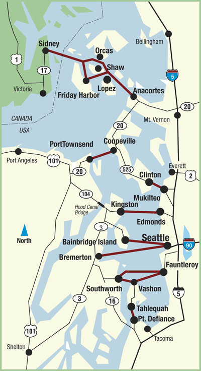

- Established in 1951
- 22 million passengers per year
- 20 terminals, 10 routes, 23 vessels
- Largest ferry system in the world for vehicles
- From Victoria to Pt. Defiance (~130 miles)
- 159,811 sailings in 2012 (12,764 in December)
- Almost 10,000,000 vehicles in 2011
|

|